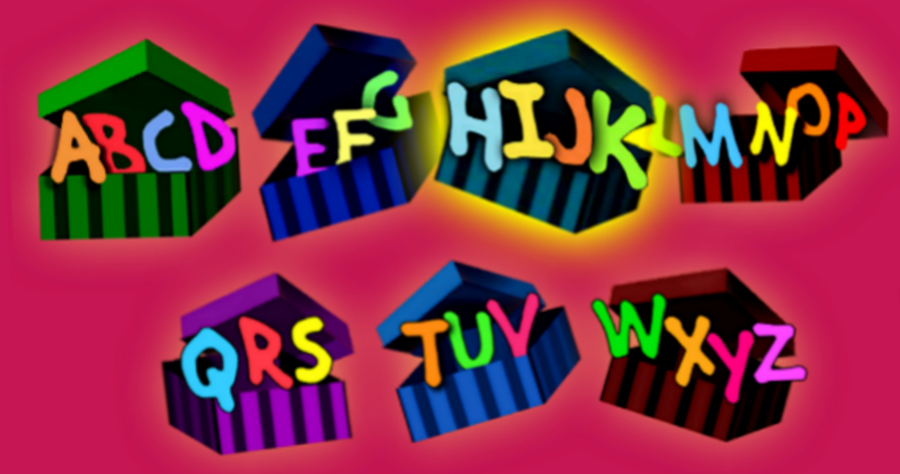
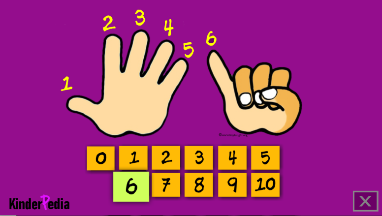
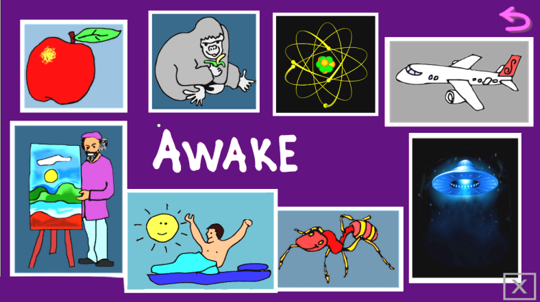

“English medium” Preschools here do a remarkable job teaching children who do not speak English at home. But, it’s an uphill task, with its issues as an AI analysis lists:-
- Kids may not grasp core concepts well, causing foundational voids
- Poor grasps may lead to study by rote, an unhealthy approach to education,memorizing without much understanding
- Children may struggle to convey their thoughts & ideas, affecting self expression & confidence,
But, we at KinderPedia have a solution!
Using animations, curated videos, audio, graphics, and bright visuals delivered through intuitive touch-screen apps, Kinderpedia captures children’s attention instantly and teaches them conceptually rather than through rote learning.
We know from our years in Multimedia that the animations & short videos can explain core concepts behind the letters, words, numbers, etc., without any verbal commentary, enabling kids from every linguistic background to grasp & comprehend matters very well !
Our Apps can use this means to cut across language barriers to help preschool teachers build the crucial foundations in kids needed for higher studies, up to college
Colourful Graphic User Interface (GUI) of our apps give the feel of digital games that kids love . . . making every lesson a game to play !
Kinderpedia Apps can get teachers vastly better results for their efforts
- Better attention from kids
- Even from special need children
- Better retention of what is taught
- Better comprehension
- Faster learning
The Apps will also transform the pace of learning & the mood of the kids as it’s a format they have known & loved well before they got to preschool.
Expect outcomes as dramatic as in our trials of our Apps with kids & teachers, who wanted to click every icon. The excitement of the kids in our video testifies to its effectiveness. See it for yourself >>>
Mathematics (10 apps)
- Concepts in Math (big / small, long / short)
- 1 to 5 (on animated fingers)
- 1 to 5 (as a graph)
- 1 to 10 (fingers)
- 1 to 10 (counting objects – fish, frogs)
- 1 to 50 (number grid)
- 1 to 100 (number grid)
- Math operatives – plus / minus
- Simple addition / subtraction
- Shapes (geometry)
Language (21 apps)
- English alphabet – upper case
- English alphabet – lower case
- Upper & lower case link-up
- ABCD with words
- abcd with words (150 animated words)
- Everyday words (4 apps, 32 words)
- 3-letter words from 2-letter words
- Total of 12 apps teaching 72 words
- Malayalam letters – basic introduction
Environmental Sciences (20 apps)
- Our Universe (Earth, solar system, stars)
- Time – day, months & seasons (with Earth)
- Common fruits (2 apps)
- Common vegetables (2 apps)
- Common nuts
- Common grains
- Common flowers (2 apps)
- Animals – Wild (3 apps), Farm, Birds (2)
- Aquatic (3), Birds (2), Reptiles, Insects
General Awareness (6 apps)
- Parts of the face
- Parts of the body
- Parts of the family
- Colours
- Transport means
- Technology & science
When 35+ vibrant apps are used, expect substantial results!
- Reduced burden on kids and teachers
- Smarter and happier kids
- Happier teachers
- Happy parents
It’s technology at work!
We’ve used AI thoughtfully and responsibly — from AI-generated voices that ensure correct pronunciation, to AI-assisted creation of images, animations, and videos. Every use of AI is carefully evaluated for consistency, correctness, and educational value.
Built on proven principles of early childhood learning
Interactivity, animation, and video with minimal voice-overs can attract preschool children with language barriers because of the following:
- Universal language: Visuals transcend language barriers, allowing children from diverse linguistic backgrounds to engage with and understand content.
- Engaging and interactive: Animations and videos naturally capture attention and encourage active learning.
- Improved retention: Children remember information better when learning is fun, visual, and engaging.
What Research Says About Play & Early Learning
A large body of research shows that play-based and interactive learning supports early brain development, strengthens cognitive skills, and makes learning meaningful and engaging for young children. Below are key findings from peer-reviewed research and expert-led studies:
- Play supports healthy brain development: Neuroscience and pediatric research show that play contributes to the formation of neural connections, enhances memory and attention, and promotes executive functions essential for learning.
- Play boosts cognitive and problem-solving skills: Research indicates that play-based learning enhances cognitive growth by encouraging exploration, experimentation, and active learning.
- Interactive formats enhance engagement: Studies on play and learning show that interactive, game-like experiences improve engagement and learning outcomes in young children.
- Play benefits social and emotional development: Research finds that play supports emotional regulation, collaboration, and social skills—important foundations for school readiness.
- Play reduces stress and supports overall well-being: Evidence suggests that playful learning reduces anxiety and creates positive environments where children thrive.
Sources
- American Academy of Pediatrics: Importance of Play in Child Development
- Siviy et al., Neurobiology of Play
- Play-Based Learning & Cognitive Development (Lazăr, 2025)
- Benefits of Play-Based Learning in Early Childhood
- Role of Play in Child Development: Cognitive & Emotional Benefits
- Nijhof et al., Importance of Play for Development